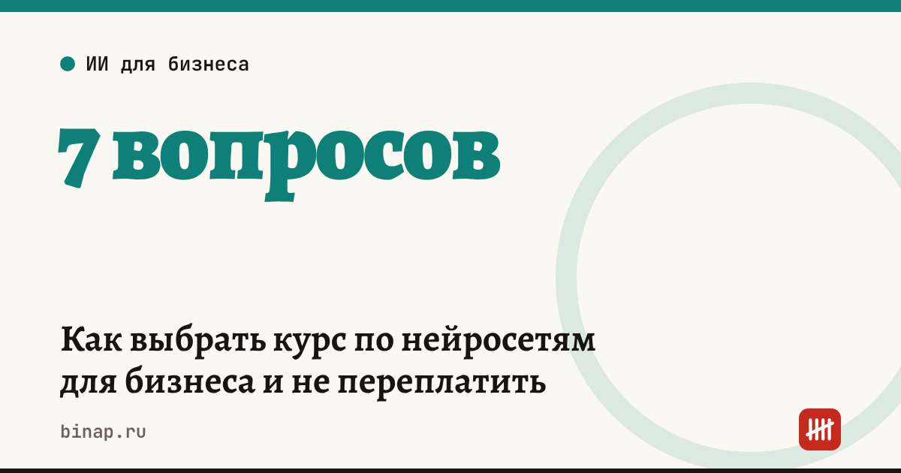

Как выбрать курс по нейросетям для бизнеса и не переплатить

Курсов по нейросетям сейчас сотни: от бесплатного вебинара на час до профессии на год за сотни тысяч рублей. Владельцу бизнеса нужен не диплом, а результат: чтобы нейросеть писала карточки товаров, отвечала клиентам или разбирала таблицы. Вот как выбрать курс под эту цель и не заплатить за лишнее.
Коротко
- Начните с задач, а не с курса: выпишите три дела, которые хотите отдать нейросети. Программа должна их покрывать.
- Для владельца и сотрудников обычно хватает короткого прикладного курса на несколько недель. Длинные профессии нужны тем, кто меняет работу.
- Смотрите на долю практики на своих задачах, а не на число модулей и громкие названия.
- Перед оплатой проверьте договор: условия возврата, что входит в цену и кто выдаёт рассрочку.
- Если у школы есть образовательная лицензия, за свой курс можно получить социальный вычет 13%, а обучение сотрудников — учесть в расходах.
Сроки, изменения и разборы для ИП и самозанятых — каждое утро в Telegram и MAX. Подпишитесь, чтобы не пропустить.
7 вопросов перед оплатой
- Какие задачи решит курс? Сравните программу со своим списком. «Нейросети для маркетолога» и «нейросети для владельца бизнеса» — разные курсы.
- Сколько практики? Хорошо, если в каждом модуле есть задание на ваших данных: тексты, таблицы, переписка с клиентами.
- Какие сервисы разбирают? Важно, чтобы это были инструменты, доступные в России, и чтобы курс объяснял подход, а не только кнопки одного сервиса: интерфейсы меняются каждые несколько месяцев.
- Сколько времени в неделю нужно? Реалистично для владельца — 2–4 часа. Курс, который требует 10 часов в неделю, вы скорее всего не закончите.
- Есть ли проверка заданий и обратная связь? Без неё курс превращается в набор записанных видео.
- Обновляется ли программа? Спросите, когда её обновляли в последний раз. Для темы нейросетей курс двухлетней давности уже устарел.
- Как вернуть деньги, если не подойдёт? По закону о защите прав потребителей от услуги можно отказаться в любой момент, оплатив только фактически понесённые школой расходы. Посмотрите, как школа считает эти расходы в своём договоре.
Короткий курс или профессия
| Короткий прикладной курс | Профессия | |
|---|---|---|
| Для кого | владелец, сотрудники, которые применяют нейросети в своей работе | тот, кто хочет работать специалистом по ИИ или данным |
| Срок | от нескольких дней до 2–3 месяцев | от полугода до года и больше |
| Что на выходе | готовые запросы и приёмы под свои задачи | новая специальность, портфолио |
| Риск | мало практики на своих данных | не закончить и переплатить за ненужное |
Деньги: рассрочка, вычет, расходы
Рассрочка. «Рассрочка от школы» часто оформляется как кредит в банке-партнёре. Уточните, кто кредитор, есть ли проценты и страховка и что будет при отказе от курса: кредит придётся закрыть отдельно.
Социальный вычет 13%. Если вы платили за своё обучение, а у школы есть образовательная лицензия, можно вернуть 13% от суммы в пределах общего лимита социальных вычетов — 150 000 ₽ в год (ст. 219 НК). Это работает, если у вас есть доход, облагаемый НДФЛ по ставке 13–15%, например зарплата. Лицензию школы можно проверить в реестре Рособрнадзора.
Обучение сотрудников в расходах. На УСН «доходы минус расходы» и на общей системе расходы на обучение работников можно учесть, если обучение проходит по договору с организацией, у которой есть право вести образовательную деятельность. Сохраните договор, акт и документ об окончании. Какой объект УСН выгоднее — в статье «доходы» или «доходы минус расходы».
Сначала попробуйте сами
Прежде чем платить, проверьте, какие задачи нейросеть решает уже сейчас. Начните с готовых запросов из статьи 10 задач малого бизнеса для нейросети и шаблонов ответов на отзывы с нейросетью. Если за неделю стало понятно, куда двигаться дальше, курс сэкономит время. Если нет — он, скорее всего, тоже не поможет.
Подобрать курс по теме, школе и цене можно в нашем каталоге курсов по нейросетям: цены и условия обновляются каждый день.
Частые вопросы
Какой курс по нейросетям выбрать владельцу бизнеса? Короткий прикладной курс с практикой на ваших задачах: текстах, таблицах, переписке с клиентами. Профессия на год нужна тем, кто меняет специальность.
Можно ли вернуть 13% за курс по нейросетям? Да, если у школы есть образовательная лицензия и у вас есть доход, облагаемый НДФЛ. Вычет — в пределах 150 000 ₽ социальных расходов в год.
Можно ли вернуть деньги, если курс не подошёл? Да, от услуги можно отказаться в любой момент. Школа вернёт оплату за вычетом фактически понесённых расходов — как они считаются, написано в договоре.